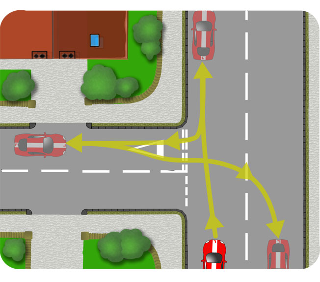
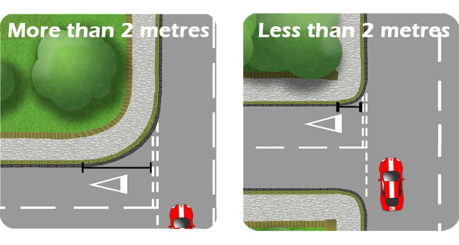
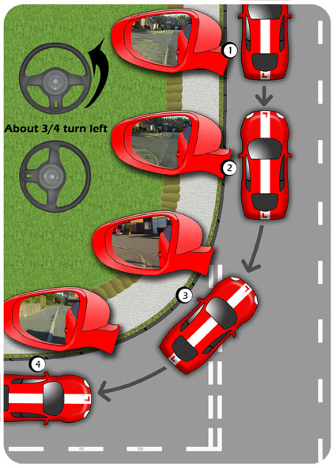
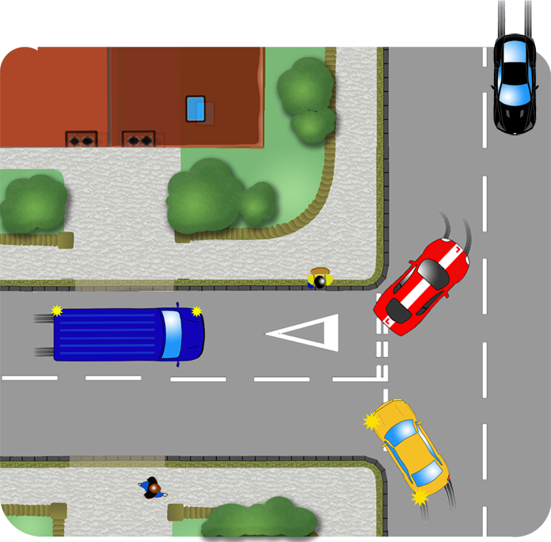
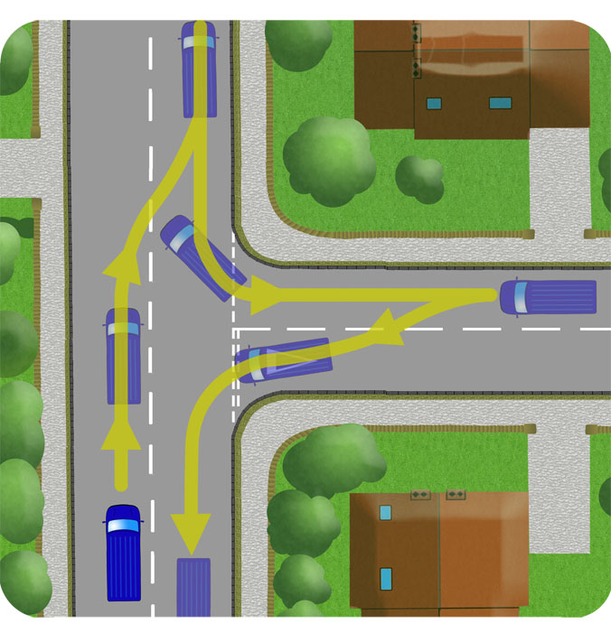

To turn the car around to face the opposite direction, you could reverse carefully into a side road on the left and drive out to the right. You won't be asked to carry out this manoeuvre on your driving test.

Choose a location where it is safe, legal and convenient avoiding:
- Busy junctions
- Pedestrian crossings
- Busy school or shopping areas
- Traffic lights
- One way streets
- Only reverse into a side road, never out of one
Sharp or Shallow?
The shape of the corner you reverse around can vary so you either need to use an adaptable technique or have a separate method for sharp and shallow junctions.
Below is a suggestion for classifying the corner as sharp or shallow. Estimate the distance from the beginning of the bend to the give way line. If it is:

Shallow Sharp
Shallow
1.As you pass the side road, assess the degree of the corner. Is it sharp or shallow? This one is shallow.
Look also for obstacles and approaching traffic. Signal to pull over if there’s anybody to benefit.
Stop 1 or 2 car lengths past the junction and a foot or so from the kerb. (A little further than your normal parking position).
Make an all round check, finishing by looking directly out of the rear window.
If it's safe, reverse carefully in a straight line.
2.Stop at the point of turn.
One way of recognising this , on a shallow bend, is to use the left wing mirror which you can lower a little if it helps. Stop before the kerb goes out of view. In the illustration you can still see a leaf shaped section of kerb in the bottom left of the mirror.
Make another all round check. The front of the car will move out into the road, so check for passing traffic and vehicles emerging from the side road.
If it is clear, set off slowly and steer about 3/4 of a turn to the left to begin with. (This is just a guideline, depending on the degree of the bend).

3.Move slowly backwards referring again to the left mirror and adjusting the steering as necessary.
Steer a little left to get closer to the kerb and right to get further away. Aim to keep the kerb in view or use any other kind of reference you or your instructor have found to be useful.
Don’t stare into the left mirror but look regularly out of the window and all around the car so that you’re prepared for any approaching traffic or pedestrians.
4.Use the left mirror and look out of the rear window to determine your proximity with the kerb. Straighten the wheels quickly as you achieve a position, close to and level with it.
You should aim to finish at a similar distance from the kerb as you started.
Reverse a couple of car lengths into the side road so that you have enough space to take a right emerging position as you exit the junction.
Continue to keep a keen lookout as you reverse, especially behind.
Sharp
If you're negotiating a sharper corner, reverse further back, until the kerb is almost out of view in the corner of the mirror. Be prepared to apply more steering, as much as full lock if necessary.

Or you could recognise the point to begin steering by looking over your left shoulder. If necessary, experiment with this reference to find something reliable.
Dealing With Other Traffic
Be particularly careful of passing traffic as you begin
to steer left. The front of the car will swing out, so
pause to let traffic past before turning.
Beware of traffic emerging from the side road. Pause the manoeuvre as it nears and be prepared to pull back around the bend to the starting point if it doesn’t hold back.
Pause as traffic enters the side road, as you or they may mistakenly steer a little wide.
Pedestrians wanting to cross the side road behind you could step into the road unexpectedly. Be prepared to stop for them.

Right Reverse
It could be more practical to reverse to the right if driving a van or vehicle allowing no rear observation. By reversing to the right, you will be able to see out of your side window into the road you’re reversing into.
The procedure is the same as for the left reverse but following a route as the diagram illustrates below.
Because of the reduced visibility, extreme caution is required in using the mirrors effectively. You can lean well forward to gain a better view into the side road.
Looking out of the window can also be useful to help recognise the point of turn.
You may not have visibility into your blindspot before turning so be sure to go slowly and monitor your mirrors and window views regularly as you turn.
Once straight in the new road, reverse a little further back than usual as you’ll need the space to get back over to the left of the road to approach the T-junction.
